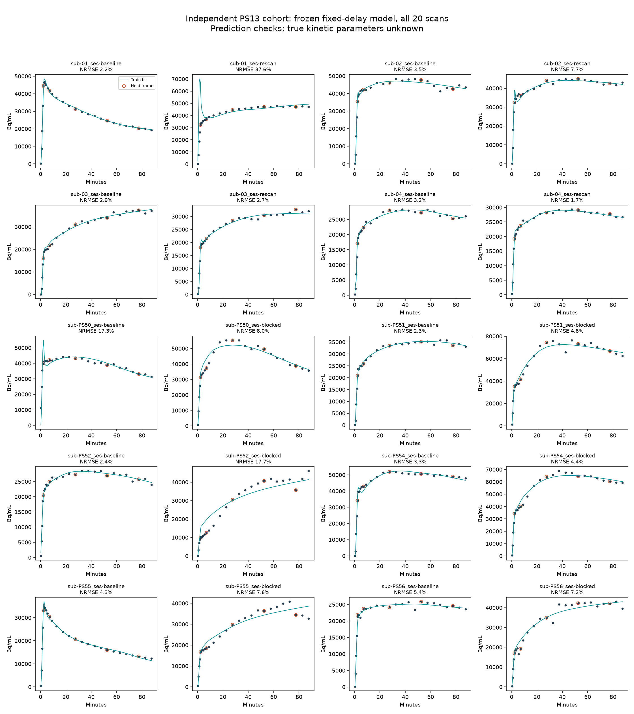

20 scans / 10 people. Full research validation remains incomplete.
The frozen model predicted held-out time points with median normalized error 4.34%, 95th percentile 18.68%, and worst case 37.59%. With fitted delay, the secondary model achieved 3.12% median error; this was not used to select or replace the primary result.
Both exploratory prediction targets were met, but only 7/20 full fits passed local QC and 5/20 had closed macroparameter profiles. 10/20 showed structured residuals. All 20 estimates remain withheld by the unchanged research screen.
These are prediction errors, not errors against known kinetic parameters. Uptake masks are exploratory and are not anatomical brain regions. No motion correction was applied in this kinetic-only experiment. Independent calibration, blood decay convention, input timing, vascular assumptions, anatomy, and expert review remain unresolved.
Unmodified pinned kinfitr Logan and MA1 functions were run on the same extracted curves. Agreement assesses calculation consistency, not biological accuracy. Source-method input and frame integration conventions differ.
{
"logan": {
"n": 20,
"median_absolute_relative_difference": 1.017577015046453e-05,
"maximum_absolute_relative_difference": 0.0001185980386715567
},
"ma1": {
"n": 20,
"median_absolute_relative_difference": 8.607940853179552e-06,
"maximum_absolute_relative_difference": 0.0001133581640628903
}
}
| Scan | Primary error | Secondary error | Local QC | Research screen |
|---|---|---|---|---|
| sub-01_ses-baseline | 2.18% | 2.06% | pass | unconfirmed_input_assumptions, structured_residuals_require_review |
| sub-01_ses-rescan | 37.59% | 41.12% | review | local:large_local_macro_uncertainty, unconfirmed_input_assumptions, macro_profile_not_available, structured_residuals_require_review |
| sub-02_ses-baseline | 3.50% | 2.33% | review | local:parameter_at_bound, unconfirmed_input_assumptions, macro_profile_not_available |
| sub-02_ses-rescan | 7.68% | 3.40% | review | local:parameter_at_bound, unconfirmed_input_assumptions, macro_profile_not_available |
| sub-03_ses-baseline | 2.86% | 2.60% | review | local:parameter_at_bound, unconfirmed_input_assumptions, macro_profile_not_available |
| sub-03_ses-rescan | 2.73% | 2.81% | review | local:parameter_at_bound, unconfirmed_input_assumptions, macro_profile_not_available, structured_residuals_require_review |
| sub-04_ses-baseline | 3.19% | 2.84% | review | local:parameter_at_bound, local:large_local_macro_uncertainty, unconfirmed_input_assumptions, macro_profile_not_available |
| sub-04_ses-rescan | 1.69% | 1.29% | pass | unconfirmed_input_assumptions |
| sub-PS50_ses-baseline | 17.25% | 3.56% | review | local:parameter_at_bound, unconfirmed_input_assumptions, macro_profile_not_available, structured_residuals_require_review |
| sub-PS50_ses-blocked | 7.97% | 7.60% | review | local:parameter_at_bound, unconfirmed_input_assumptions, macro_profile_not_available, structured_residuals_require_review |
| sub-PS51_ses-baseline | 2.27% | 1.84% | pass | unconfirmed_input_assumptions, macro_profile_open_or_incomplete |
| sub-PS51_ses-blocked | 4.75% | 4.55% | review | local:parameter_at_bound, unconfirmed_input_assumptions, macro_profile_not_available |
| sub-PS52_ses-baseline | 2.39% | 2.54% | pass | unconfirmed_input_assumptions, macro_profile_open_or_incomplete |
| sub-PS52_ses-blocked | 17.69% | 16.12% | review | local:parameter_at_bound, local:rank_deficient_jacobian, local:ill_conditioned_scaled_jacobian, local:large_local_macro_uncertainty, unconfirmed_input_assumptions, macro_profile_not_available, structured_residuals_require_review |
| sub-PS54_ses-baseline | 3.33% | 2.43% | pass | unconfirmed_input_assumptions, structured_residuals_require_review |
| sub-PS54_ses-blocked | 4.36% | 4.72% | review | local:parameter_at_bound, unconfirmed_input_assumptions, macro_profile_not_available, structured_residuals_require_review |
| sub-PS55_ses-baseline | 4.32% | 1.60% | pass | unconfirmed_input_assumptions, structured_residuals_require_review |
| sub-PS55_ses-blocked | 7.57% | 7.55% | review | local:parameter_at_bound, local:large_local_macro_uncertainty, unconfirmed_input_assumptions, macro_profile_not_available, structured_residuals_require_review |
| sub-PS56_ses-baseline | 5.44% | 5.47% | pass | unconfirmed_input_assumptions |
| sub-PS56_ses-blocked | 7.21% | 7.25% | review | local:large_local_macro_uncertainty, unconfirmed_input_assumptions, macro_profile_not_available |
20/20 automatic registrations completed. No independent landmark errors have been measured. An attractive overlay or registration metric does not establish accuracy.
Open automatic alignment review pack. Expert landmark placement must use native images independently of these overlays.
None of the four repeat-scan pairs passed local QC on both scans. Raw withheld VT estimates show substantial variation, including a near-boundary, non-identifiable estimate above 20,000 mL/mL. These results do not establish reproducibility. See summary.json for every pair.
EXT-01 has new external evidence but still needs source verification, anatomical ROIs and independent review. REG-02 needs independent measured-human reference landmarks/transforms and a reviewed tolerance for at least 10 pairs. RIRE states that its truth transforms remain sequestered and its former evaluation service is no longer maintained.
Sources: OpenNeuro PS13; Original PS13 study; RIRE availability.
Frozen protocol · Machine-readable summary · Source checksums